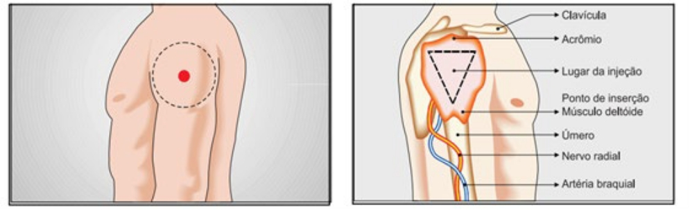

Vacinação para prevenção da Covid-19 nas Instituições de Longa Permanência para Idosos
Diante do cenário da pandemia da Covid-19, a vacinação das pessoas idosas e dos profissionais atuantes nas ILPIs deve ser considerada prioritária. Ao final desta aula, você vai ser capaz de:
-
Entender por que é importante priorizar a vacinação das pessoas idosas e dos
profissionais atuantes nas ILPIs. -
Compreender as recomendações e os cuidados integrais à pessoa idosa nas ILPIs.
-
Relembrar os procedimentos básicos para o banho e higiene oral da pessoa idosa.
Por que priorizar a vacinação para Covid-19 nas ILPIs?
Como você viu na Aula 1 deste curso, pessoas com idade superior a 60 anos são consideradas mais vulneráveis à Covid-19. De acordo com o relatório produzido pelo PROCC/Fiocruz, citado pelo Plano Nacional de Operacionalização da Vacinação contra Covid-19 (2021), as pessoas idosas constituem o grupo de maior risco para hospitalização e óbito por Síndrome Respiratória Aguda Grave (SARS) por Covid-19, o que pode ser duas vezes maior quando comparado à totalidade de casos, com aumento gradual relacionado a maior à faixa etária, podendo chegar a 8,5 vezes para hospitalização e 18,3 vezes para óbito em idosos acima de 90 anos.
Algumas comorbidades associadas à idade também aumentam o risco de hospitalização
-
Diabetes mellitus;
-
Doença renal crônica;
-
Pneumopatias crônicas e outras doenças respiratórias;
-
Hipertensão arterial resistente.
Considerando o contexto de institucionalização das ILPIs, destaca-se a elevada vulnerabilidade social de todos os envolvidos (pessoas idosas e profissionais), uma vez que ambientes fechados podem ser propícios a ocorrência de surtos de Covid-19 entre outras doenças infectocontagiosas, dada a dificuldade de adoção das medidas de isolamento e prevenção em algumas instituições.
A vacinação das pessoas idosas e dos profissionais atuantes nas ILPIs contra a Covid-19 deve ser considerada prioritária nos sistemas de saúde, independente da natureza, seja: pública, filantrópica ou privada.
Vacinas nas ILPIs
Vacinas para prevenção da Covid-19
O detalhamento da produção e estudos em desenvolvimento encontra-se descrito no Relatório Técnico de Monitoramento de Vacinas em Desenvolvimento contra SARS-CoV-2, da Secretaria de Ciência, Tecnologia, Inovação e Insumos Estratégicos em Saúde.
Tipo de vacinas
Plataformas tecnológicas estão sendo desenvolvidas no contexto mundial, e encontram-se na fase III de estudos clínicos. Conheça os tipos de vacina:
-
Utilizam a tecnologia clássica de produção, através da qual é produzida uma grande quantidade de vírus em culturas de células, sendo estes posteriormente inativados por procedimentos físicos ou químicos.
-
Geralmente são vacinas seguras e imunogênicas, pois os vírus inativados não possuem a capacidade de replicação e assim o organismo não fica exposto às grandes quantidades de antígenos.
-
As vacinas para prevenir Covid-19 de vírus inativados em fase III são desenvolvidas por empresas associadas aos institutos de pesquisa Sinovac, Sinopharm/Wuhan Institute of Biological Products, Sinopharm/ Beijing Institute of Biological Products, Bharat Biotech, Research Institute for Biological Safety Problems e Chinese Academy of Medical Sciences.
-
Utilizam vírus humanos ou de outros animais, replicantes ou não, como vetores de genes que codificam a produção da proteína antigênica (no caso a proteína Spike ou proteína S do SARS-CoV-2).
-
As vacinas para prevenir Covid-19 de vetores virais em fase III que utilizam essa plataforma são: Oxford/AstraZeneca (adenovírus de chimpanzé); CanSino (adenovírus humano 5 - Ad5); Janssen/J&J (adenovírus humano 26 – Ad26) e Gamaleya (adenovírus humano 26 – Ad26 na primeira dose, seguindo de adenovírus humano 5 - Ad5 na segunda dose).
-
O segmento do RNA mensageiro do vírus, capaz de codificar a produção da proteína antigênica (proteína Spike), é encapsulado em nanopartículas lipídicas. Da mesma forma que as vacinas de vetores virais, uma vez inoculadas, estas vacinas estimulam as células humanas a produzir a proteína Spike, que vão por sua vez estimular a resposta imune específica.
-
Esta tecnologia permite a produção de volumes importantes de vacinas, mas é uma tecnologia totalmente nova e nunca antes utilizada ou licenciada em vacinas para uso em larga escala.
-
Atualmente, as vacinas produzidas pela Moderna/NIH, Pfizer/BioNTec e CureVac AG são as duas vacinas de mRNA em fase III.
-
Do ponto de vista de transporte e armazenamento, estas vacinas requerem temperaturas muito baixas para conservação (-70 ºC no caso da vacina candidata da Pfizer e -20 ºC no caso da vacina candidata da Moderna), o que pode ser um obstáculo operacional para a vacinação em massa, especialmente em países de baixa e média renda.
-
Através de recombinação genética do vírus SARSCoV-2, se utilizam nanopartículas da proteína Spike (S) do vírus recombinante SARSCoV-2 rS ou uma parte dessa proteína denominada de domínio de ligação ao receptor (RDB).
-
Os fragmentos do vírus desencadeiam uma resposta imune sem expor o corpo ao vírus inteiro. Esta é uma tecnologia já licenciada e utilizada em outras vacinas para uso em larga escala e, usualmente, requer adjuvantes para indução da resposta imune.
-
As vacinas para prevenção da Covid-19 que utilizam esta tecnologia em fase III são: A vacina da Novavax, que utiliza como adjuvante a Matriz-M1™, e a vacina desenvolvida pela “Anhui Zhifei Longcom Biopharmaceutical”, “Institute of Microbiology, Chinese Academy of Sciences” e “Clover Biopharmaceuticals”.
Vacinas aprovadas
Em janeiro de 2021, diante da emergência em saúde pública vivenciada e a necessidade da disponibilização de vacinas para a prevenção da Covid-19, a ANVISA aprovou no Brasil duas vacinas para uso emergencial, são elas:
-
Coronavac
Instituto Butantan (IB) - Vacina adsorvida Covid-19 (Inativada)
Fabricante: Sinovac Life Sciences Co., Ltd. Parceria: IB/ Sinovac.
Processo: 25351.900460/2021-13
-
Covishiled
Fundação Oswaldo Cruz (Fiocruz) - INSTITUTO DE TECNOLOGIA EM IMUNOBIOLÓGICOS - Bio-Manguinhos - Vacina Covid-19 (recombinante)
Fabricante: Serum Institute of India Pvt. Ltd.
Parceria: Fiocruz/ Astrazeneca.
Processo: 25351.900503/2021-61.
Orientações para a vacinação contra a Covid-19 nas ILPIs
A vacinação para Covid-19 nas ILPIs deverá seguir as regulamentações do Programa Nacional de Imunização (PNI) e do Plano Nacional de Operacionalização da Vacinação contra Covid-19 (2021).
Algumas orientações são prioritárias considerando-se a vacinação em geral para pessoas idosas e profissionais atuantes nas ILPIs, conforme destaca a Nota Técnica Nº 5 da ANVISA.
-
Certificar-se de que os residentes estejam com todas as vacinas em dia, principalmente as relacionadas às doenças respiratórias infecciosas, conforme calendário de vacinação do idoso, definido pelo Programa Nacional de Imunização (PNI) do Ministério da Saúde. Todos os residentes devem estar com o Cartão de Vacinação para o Idoso atualizado.
-
Nos casos de necessidade de atualização do cartão de vacinação, verificar junto à Secretaria de Saúde local a possibilidade da vacinação ser realizada dentro da instituição, para evitar o deslocamento dos idosos.
-
Certificar-se de que os profissionais e cuidadores que atuam na ILPI estejam com o cartão de vacinação atualizado, incluindo a vacinação contra influenza, conforme previsto no Programa Nacional de Imunização (PNI).
Fonte: Nota Técnica GVIMS/GGTES/ANVISA n. 05/2020
Preparo das instituições
A distribuição da vacina no Brasil será realizada a partir de uma rede de frio nacional, que encaminhará as vacinas às redes de frio estaduais e municipais sucessivamente. Em seguida, a vacina será encaminhada e acondicionada nas salas de vacinação das unidades de saúde legalizadas. A sala de vacinação tem sua estrutura definida segundo a RDC n° 50 de 21 de fevereiro de 2002 e os CRIE em consonância com a Portaria n° 48 de 28 de julho de 2004.
A rede de frio é de extrema importância, pois é necessária a manutenção de um rigoroso monitoramento e controle da temperatura, desde as plantas produtoras até os locais de vacinação, visando a preservação adequada e evitando a exposição dos imunobiológicos distribuídos às condições diversas.

ATENÇÃO
A exposição acumulada da vacina às temperaturas mais quentes ou mais frias, ou ainda à luz, em qualquer etapa da cadeia, gera uma perda de potência que não poderá ser restaurada. As vacinas que contêm adjuvante de alumínio, quando expostas à temperatura 0 °C, ou inferiores, podem ter perda de potência em caráter permanente.
Por isso, o controle de temperatura deverá ser registrado em mapas de controle, no início e no término do expediente. Os sensores aplicados à medição devem ser periodicamente calibrados e certificados por Laboratórios de Calibração da Rede Brasileira de Calibração do Instituto Nacional de Metrologia, Qualidade e Tecnologia – Inmetro, de forma a garantir a precisão dos registros de temperatura (+2 °C a +8 °C).

Nas ILPIs, deverá ser realizado um diagnóstico prévio do público alvo institucionalizado para a organização da vacinação no local.
No dia e horário agendado, os profissionais de saúde da SMS, realizarão a administração da vacina na ILPI, considerando todos os cuidados inerentes ao processo de vacinação.
Ao vacinar os idosos e as pessoas com deficiência, institucionalizados, é importante também incluir os trabalhadores de saúde que fazem parte do corpo técnico dessas instituições.
Administração da vacina para Covid-19 e cuidados principais
A vacina deverá ser administrada por Via Intramuscular, em esquema de duas doses, com intervalo de 21 ou 28 dias, seguindo as especificações do fabricante. Recomenda-se:
-
Utilizar agulha 25x7 e aplicar no músculo deltóide direito (braço) preferencialmente.
-
Utilizar agulha 25x6 ou 25x7 e aplicar no músculo deltóide direito (braço) preferencialmente.
Caso a pessoa apresente algum impedimento para receber a vacina no músculo deltóide (braço), a aplicação poderá ser realizada no vasto lateral da coxa. Outra área alternativa para a administração será a ventroglútea, devendo ser utilizada por profissionais capacitados.
Serão utilizadas para aplicação seringas e agulhas com as seguintes especificações:
-
Seringas de plástico descartáveis (de 1,0 ml, 3,0 ml, 5,0 ml);
-
Agulhas descartáveis para uso intramuscular: 25 x 6,0 dec/mm; 25 x 7,0 dec/mm; 25 x 8,0 dec/mm e 30 x 7,0 dec/mm.
-
Recomenda-se a realização de uma curta anamnese com o paciente para constatação acerca de alergias, histórico de Síndrome Vasovagal e possíveis sinais e sintomas de síndrome gripal e/ou síndrome febril aguda, antes da aplicação da vacina.
-
No caso de indivíduo com histórico de Síndrome Vasovagal, colocá-lo em observação clínica por pelo menos 15 minutos após a administração da vacina.
-
Recomenda-se observar a presença de sangramento ou hematomas após uma administração intramuscular em indivíduos recebendo terapia anticoagulante ou aqueles com trombocitopenia ou qualquer distúrbio de coagulação (como hemofilia). Orienta-se pressionar o algodão no local da aplicação por mais tempo. Caso ocorra sangramento encaminhar para atendimento médico.
-
Ao final do expediente e considerando a necessidade de otimizar doses ainda disponíveis em frascos abertos, a fim de evitar perdas técnicas, direcionar o uso da vacina para pessoas contempladas em alguns dos grupos priorizados no Plano Nacional de Operacionalização da Vacinação contra a covid-19.
A Vacinação é muito importante e as doses da vacina não devem ser desperdiçadas!
Técnica para administração de vacinas por via intramuscular
-
Lavar as mãos.
-
Fazer a limpeza da pele, caso necessário (com álcool a 70% ou água e sabão).
-
Esticar a pele com os dedos indicador e polegar, mantendo o músculo firme.
-
Introduzir a agulha no músculo deltoide direito (braço) ou na região lateral da coxa, com angulação levemente oblíqua ao eixo longitudinal da perna em direção podálica.
-
Aspirar, observando se não atingiu algum vaso sanguíneo; caso isso aconteça, retirar a agulha e preparar outra dose de vacina.
-
Injetar o líquido lentamente.
-
Retirar a seringa com a agulha, com movimento único e firme.
-
Fazer leve compressão no local com algodão seco.
-
Lavar as mãos.
Figuras 1 e 2: Músculo deltoide e região deltoide no terço superior e face externa do braço.
Fonte: FUNASA/ Ministério da Saúde (2001).
DESCARTE DE RESÍDUOS
Nas salas de vacina e na vacinação extramuros, o descarte de resíduos deverá seguir as recomendações do PNI, ou seja, seringas, agulhas e demais perfurocortantes deverão ser descartados em caixas de papelão reforçado (próprias para essa finalidade). O recolhimento desse material seguirá as normatizações dos órgãos responsáveis, como as secretarias municipais de saúde.

Contraindicações
A vacina para prevenção da Covid-19 é contraindicada nos seguintes casos:
-
Pessoas que possuem hipersensibilidade/alergia ao princípio ativo ou a qualquer um dos componentes da vacina.
-
Pessoas que já apresentaram reação anafilática confirmada em dose anterior da vacina para a Covid-19.
Já a vacinação dos grupos especiais (gestantes, puérperas e lactantes; pessoas em uso de antiagregantes plaquetários e anticoagulantes orais; portadores de doenças reumáticas imunomediadas; pacientes oncológicos, transplantados e demais pacientes imunossuprimidos) deverá ser avaliada criteriosamente pelo serviço de saúde, seguindo as recomendações médicas e do Plano Nacional de Operacionalização da Vacinação contra a Covid-19.
Eventos adversos
A ocorrência de eventos adversos deverá ser observada. Recomenda-se que todos os eventos, não graves ou graves, compatíveis com as definições de casos, estabelecidas no Manual de Vigilância Epidemiológica de Eventos Adversos Pós-Vacinação, sejam notificados, seguindo o fluxo estabelecido pelo PNI. O sistema para a notificação será o e-SUS Notifica.
A notificação de queixas técnicas das vacinas para a Covid-19 autorizadas para uso emergencial temporário, em caráter experimental, deve ser realizada no Sistema de Notificações em Vigilância Sanitária - Notivisa.
Além disso, as notificações de eventos adversos também deverão seguir o fluxo estabelecido pelas secretarias municipais e estaduais de saúde.
Principais eventos adversos observados na administração da vacina para Covid-19
Conheça os principais eventos adversos.
-
Artralgia;
-
Mialgia;
-
Perturbações gerais e condições no local de administração, como dor no local da injeção;
-
Fadiga;
-
Arrepios;
-
Febre.
-
Vermelhidão no local da injeção;
-
Inchaço no local da injeção.
ATENÇÃO
Recomenda-se que, antes de qualquer vacinação, seja verificada nas bulas do respectivo fabricante, as informações fornecidas sobre a vacina a ser administrada.
Sistemas de registros
ATENÇÃO
De acordo com o Plano Nacional de Operacionalização da Vacinação contra Covid-19, o registro da dose aplicada da vacina será nominal/individualizado. Essa modalidade de registro garante o reconhecimento do cidadão vacinado pelo número do Cadastro de Pessoa Física (CPF) ou do Cartão Nacional de Saúde (CNS), a fim de possibilitar o acompanhamento das pessoas vacinadas, evitar duplicidade de vacinação, e identificar/monitorar a investigação de possíveis eventos adversos pós-vacina.
Os registros das doses aplicadas deverão ser realizados no Sistema de Informação do Programa Nacional de Imunização (Novo SI-PNI - online) ou em um sistema próprio que interoperar com ele, por meio da Rede Nacional de Dados em Saúde (RNDS).
No caso das salas de vacina sem conectividade com a internet que funcionam no âmbito da APS, os registros das doses aplicadas poderão ser feitos no e-SUS AB, por meio da Coleta de Dados Simplificada - modalidade CDS. Essas salas farão registros offline e depois submeterão seus registros para o servidor assim que a conexão com a internet estiver disponível, no prazo máximo de 48 horas.
Da mesma forma, as salas de vacina que ainda não estão informatizadas e/ou não possuem uma rede de internet adequada disponível, ou mesmo as unidades em atividades de vacinação extramuros durante a campanha, deverão realizar os registros de dados nominais e individualizados em formulários, para posterior registro no sistema de informação em até 48 horas.
Os formulários para registros possuem variáveis padronizadas, sendo:
-
Estabelecimento de saúde.
-
CPF ou CNS do vacinado.
-
Data de nascimento, nome da mãe e sexo.
-
Grupo prioritário.
-
Data da vacinação, nome da vacina, fabricante, tipo de dose, lote e validade da vacina.
Chegamos ao final da aula!
Nessa aula, você viu a importância de priorizar a vacina de prevenção à Covid-19 em todos os envolvidos nas Instituições de Longa Permanência de Idosos, conheceu os tipos de vacinas que estão sendo desenvolvidas para o enfrentamento da pandemia pela Covid-19 e quais delas já foram aprovadas pela ANVISA. Também conheceu as orientações e principais cuidados para vacinação contra Covid-19 nas ILPIs.
Antes de seguir em frente, que tal responder ao quiz?
Cuidados integrais
Contatos sociais em tempos de isolamento